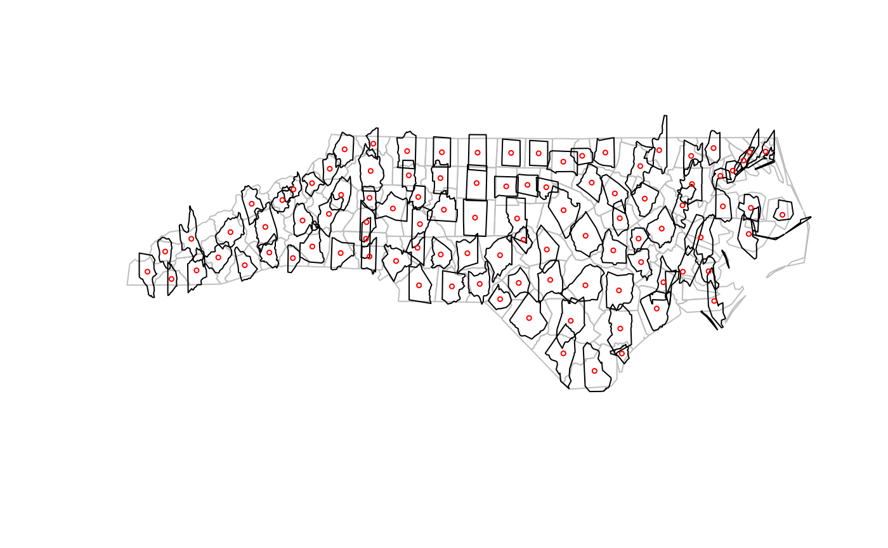
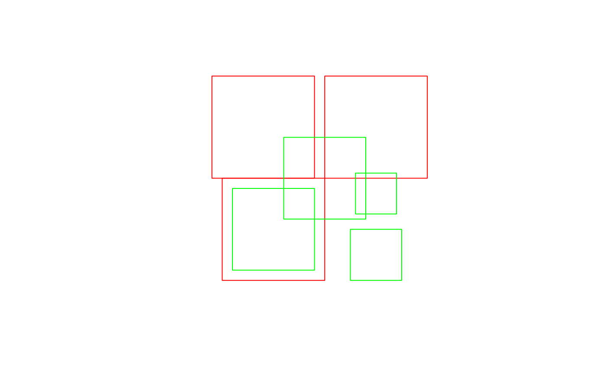
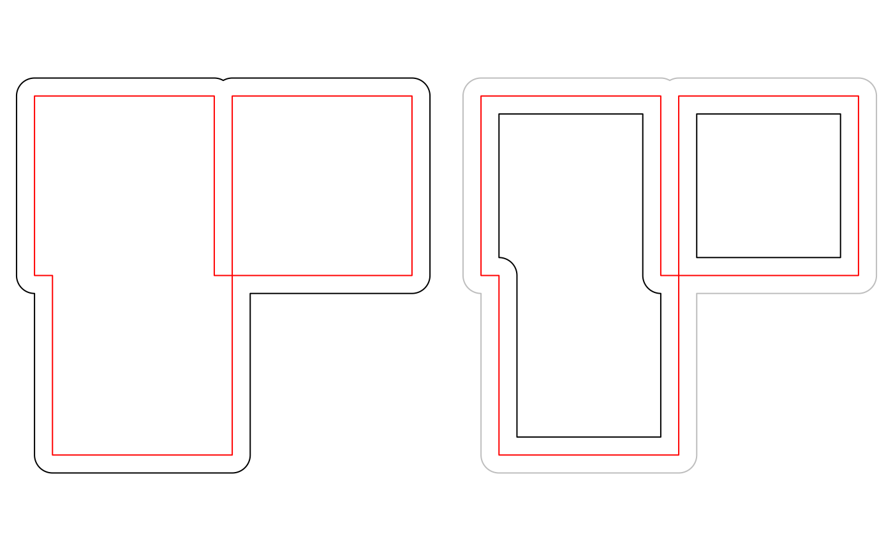
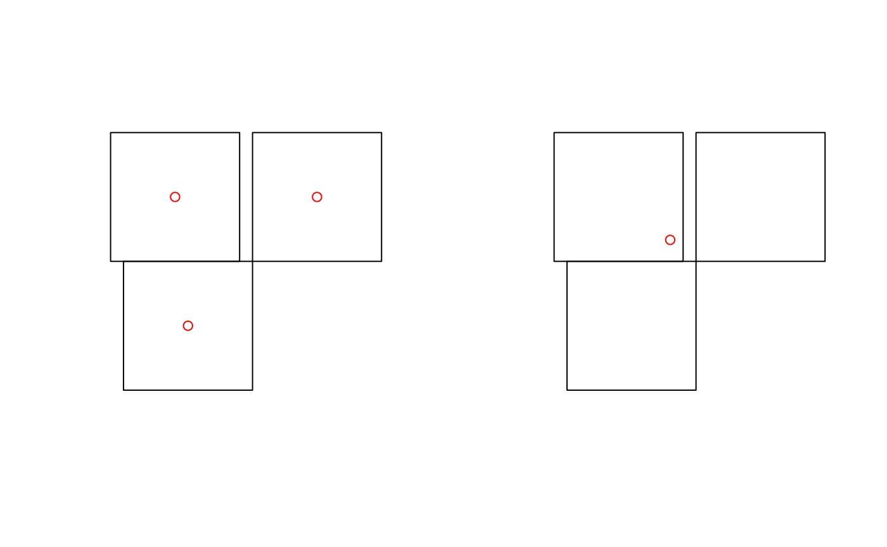
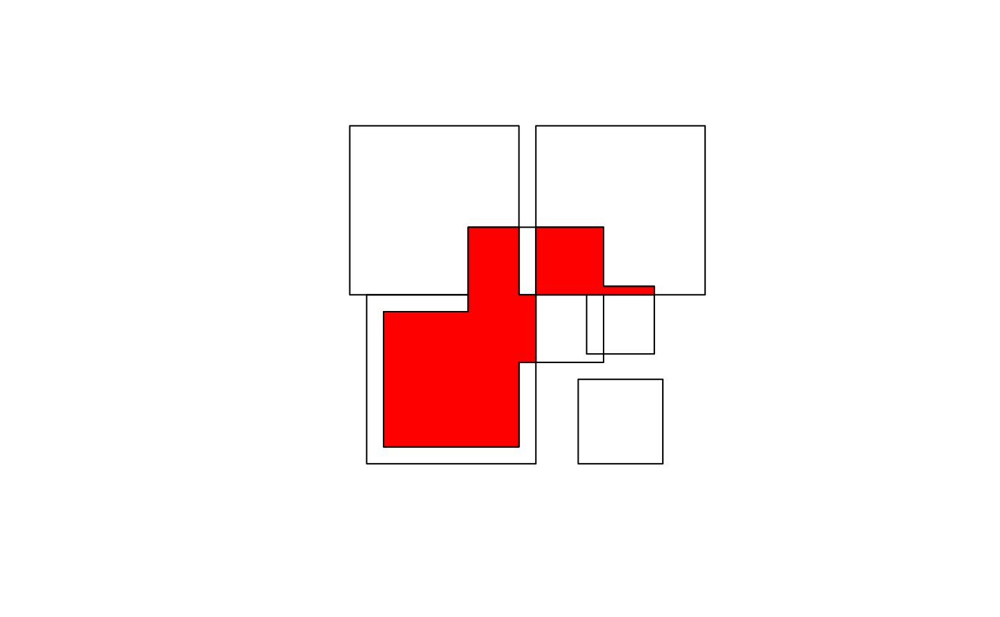
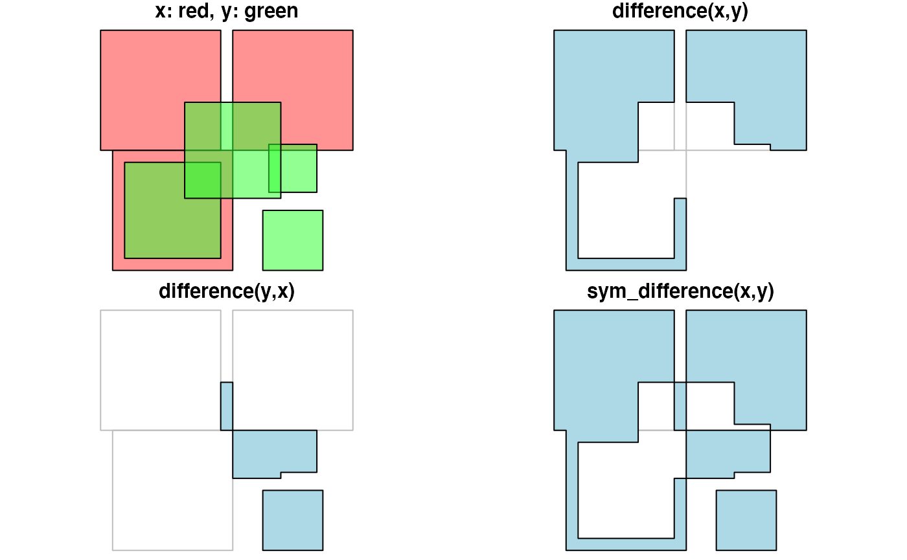
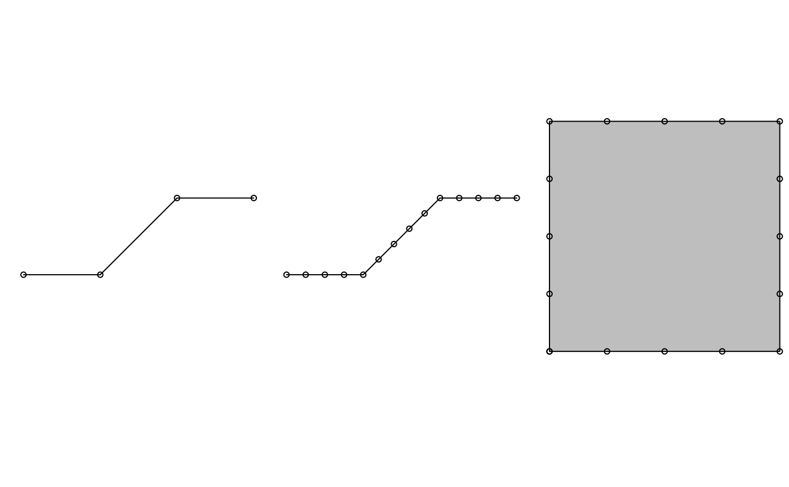

This vignette describes how simple feature geometries can be manipulated, where manipulations include
- type transformations (e.g.,
POLYGONtoMULTIPOLYGON) - affine transformation (shift, scale, rotate)
- transformation into a different coordinate reference system
- geometrical operations, e.g. finding the centroid of a polygon, detecting whether pairs of feature geometries intersect, or find the union (overlap) of two polygons.
Type transformations
This sections discusses how simple feature geometries of one type can
be converted to another. For converting lines to polygons, see also
st_polygonize() below.
For single geometries
For single geometries, st_cast() will
- convert from XX to MULTIXX, e.g.
LINESTRINGtoMULTILINESTRING - convert from MULTIXX to XX if MULTIXX has length one (else, it will still convert but warn about loss of information)
- convert from MULTIXX to XX if MULTIXX does not have length one, but it will warn about the loss of information
- convert GEOMETRYCOLLECTION of length one to its component if
Examples of the first three types are:
library(sf)
## Linking to GEOS 3.12.1, GDAL 3.8.4, PROJ 9.4.0; sf_use_s2() is TRUE
suppressPackageStartupMessages(library(dplyr))
st_point(c(1,1)) %>% st_cast("MULTIPOINT")
## MULTIPOINT ((1 1))
st_multipoint(rbind(c(1,1))) %>% st_cast("POINT")
## Warning in st_cast.MULTIPOINT(., "POINT"): point from first coordinate only
## POINT (1 1)
st_multipoint(rbind(c(1,1),c(2,2))) %>% st_cast("POINT")
## Warning in st_cast.MULTIPOINT(., "POINT"): point from first coordinate only
## POINT (1 1)Examples of the fourth type are:
For collections of geometry (sfc) and simple feature collections (sf)
It should be noted here that when reading geometries using
st_read(), the type argument can be used to
control the class of the returned geometry:
shp = system.file("shape/nc.shp", package="sf")
class(st_geometry(st_read(shp, quiet = TRUE)))
## [1] "sfc_MULTIPOLYGON" "sfc"
class(st_geometry(st_read(shp, quiet = TRUE, type = 3)))
## [1] "sfc_POLYGON" "sfc"
class(st_geometry(st_read(shp, quiet = TRUE, type = 1)))
## [1] "sfc_GEOMETRY" "sfc"This option is handled by the GDAL library; in case of failure to
convert to the target type, the original types are returned, which in
this case is a mix of POLYGON and MULTIPOLYGON
geometries, leading to a GEOMETRY as superclass. When we
try to read multipolygons as polygons, all secondary rings of
multipolygons get lost.
When functions return objects with mixed geometry type
(GEOMETRY), downstream functions such as
st_write() may have difficulty handling them. For some of
these cases, st_cast() may help modify their type. For sets
of geometry objects (sfc) and simple feature sets
(sf),st_cast` can be used by specifying the target type, or
without specifying it.
ls <- st_linestring(rbind(c(0,0),c(1,1),c(2,1)))
mls <- st_multilinestring(list(rbind(c(2,2),c(1,3)), rbind(c(0,0),c(1,1),c(2,1))))
(sfc <- st_sfc(ls,mls))
## Geometry set for 2 features
## Geometry type: GEOMETRY
## Dimension: XY
## Bounding box: xmin: 0 ymin: 0 xmax: 2 ymax: 3
## CRS: NA
## LINESTRING (0 0, 1 1, 2 1)
## MULTILINESTRING ((2 2, 1 3), (0 0, 1 1, 2 1))
st_cast(sfc, "MULTILINESTRING")
## Geometry set for 2 features
## Geometry type: MULTILINESTRING
## Dimension: XY
## Bounding box: xmin: 0 ymin: 0 xmax: 2 ymax: 3
## CRS: NA
## MULTILINESTRING ((0 0, 1 1, 2 1))
## MULTILINESTRING ((2 2, 1 3), (0 0, 1 1, 2 1))
sf <- st_sf(a = 5:4, geom = sfc)
st_cast(sf, "MULTILINESTRING")
## Simple feature collection with 2 features and 1 field
## Geometry type: MULTILINESTRING
## Dimension: XY
## Bounding box: xmin: 0 ymin: 0 xmax: 2 ymax: 3
## CRS: NA
## a geom
## 1 5 MULTILINESTRING ((0 0, 1 1,...
## 2 4 MULTILINESTRING ((2 2, 1 3)...When no target type is given, st_cast() tries to be
smart for two cases:
- if the class of the object is
GEOMETRY, and all elements are of identical type, and - if all elements are length-one
GEOMETRYCOLLECTIONobjects, in which caseGEOMETRYCOLLECTIONobjects are replaced by their content (which may be aGEOMETRYmix again)
Examples are:
ls <- st_linestring(rbind(c(0,0),c(1,1),c(2,1)))
mls1 <- st_multilinestring(list(rbind(c(2,2),c(1,3)), rbind(c(0,0),c(1,1),c(2,1))))
mls2 <- st_multilinestring(list(rbind(c(4,4),c(4,3)), rbind(c(2,2),c(2,1),c(3,1))))
(sfc <- st_sfc(ls,mls1,mls2))
## Geometry set for 3 features
## Geometry type: GEOMETRY
## Dimension: XY
## Bounding box: xmin: 0 ymin: 0 xmax: 4 ymax: 4
## CRS: NA
## LINESTRING (0 0, 1 1, 2 1)
## MULTILINESTRING ((2 2, 1 3), (0 0, 1 1, 2 1))
## MULTILINESTRING ((4 4, 4 3), (2 2, 2 1, 3 1))
class(sfc[2:3])
## [1] "sfc_MULTILINESTRING" "sfc"
class(st_cast(sfc[2:3]))
## [1] "sfc_MULTILINESTRING" "sfc"
gc1 <- st_geometrycollection(list(st_linestring(rbind(c(0,0),c(1,1),c(2,1)))))
gc2 <- st_geometrycollection(list(st_multilinestring(list(rbind(c(2,2),c(1,3)), rbind(c(0,0),c(1,1),c(2,1))))))
gc3 <- st_geometrycollection(list(st_multilinestring(list(rbind(c(4,4),c(4,3)), rbind(c(2,2),c(2,1),c(3,1))))))
(sfc <- st_sfc(gc1,gc2,gc3))
## Geometry set for 3 features
## Geometry type: GEOMETRYCOLLECTION
## Dimension: XY
## Bounding box: xmin: 0 ymin: 0 xmax: 4 ymax: 4
## CRS: NA
## GEOMETRYCOLLECTION (LINESTRING (0 0, 1 1, 2 1))
## GEOMETRYCOLLECTION (MULTILINESTRING ((2 2, 1 3)...
## GEOMETRYCOLLECTION (MULTILINESTRING ((4 4, 4 3)...
class(st_cast(sfc))
## [1] "sfc_GEOMETRY" "sfc"
class(st_cast(st_cast(sfc), "MULTILINESTRING"))
## [1] "sfc_MULTILINESTRING" "sfc"Affine transformations
Affine transformations are transformations of the type , where matrix is used to flatten, scale and/or rotate, and to translate . Low-level examples are:
(p = st_point(c(0,2)))
## POINT (0 2)
p + 1
## POINT (1 3)
p + c(1,2)
## POINT (1 4)
p + p
## POINT (0 4)
p * p
## POINT (0 4)
rot = function(a) matrix(c(cos(a), sin(a), -sin(a), cos(a)), 2, 2)
p * rot(pi/4)
## POINT (1.414214 1.414214)
p * rot(pi/2)
## POINT (2 1.224647e-16)
p * rot(pi)
## POINT (2.449294e-16 -2)Just to make the point, we can for instance rotate the counties of North Carolina 90 degrees clockwise around their centroid, and shrink them to 75% of their original size:
nc = st_read(system.file("shape/nc.shp", package="sf"), quiet = TRUE)
ncg = st_geometry(nc)
plot(ncg, border = 'grey')
cntrd = st_centroid(ncg)
ncg2 = (ncg - cntrd) * rot(pi/2) * .75 + cntrd
plot(ncg2, add = TRUE)
plot(cntrd, col = 'red', add = TRUE, cex = .5)
Coordinate reference systems conversion and transformation
Getting and setting coordinate reference systems of sf objects
The coordinate reference system of objects of class sf
or sfc is obtained by st_crs(), and replaced
by st_crs<-:
library(sf)
geom = st_sfc(st_point(c(0,1)), st_point(c(11,12)))
s = st_sf(a = 15:16, geometry = geom)
st_crs(s)
## Coordinate Reference System: NA
s1 = s
st_crs(s1) <- 4326
st_crs(s1)
## Coordinate Reference System:
## User input: EPSG:4326
## wkt:
## GEOGCRS["WGS 84",
## ENSEMBLE["World Geodetic System 1984 ensemble",
## MEMBER["World Geodetic System 1984 (Transit)"],
## MEMBER["World Geodetic System 1984 (G730)"],
## MEMBER["World Geodetic System 1984 (G873)"],
## MEMBER["World Geodetic System 1984 (G1150)"],
## MEMBER["World Geodetic System 1984 (G1674)"],
## MEMBER["World Geodetic System 1984 (G1762)"],
## MEMBER["World Geodetic System 1984 (G2139)"],
## ELLIPSOID["WGS 84",6378137,298.257223563,
## LENGTHUNIT["metre",1]],
## ENSEMBLEACCURACY[2.0]],
## PRIMEM["Greenwich",0,
## ANGLEUNIT["degree",0.0174532925199433]],
## CS[ellipsoidal,2],
## AXIS["geodetic latitude (Lat)",north,
## ORDER[1],
## ANGLEUNIT["degree",0.0174532925199433]],
## AXIS["geodetic longitude (Lon)",east,
## ORDER[2],
## ANGLEUNIT["degree",0.0174532925199433]],
## USAGE[
## SCOPE["Horizontal component of 3D system."],
## AREA["World."],
## BBOX[-90,-180,90,180]],
## ID["EPSG",4326]]
s2 = s
st_crs(s2) <- "+proj=longlat +datum=WGS84"
all.equal(s1, s2)
## [1] "Component \"geometry\": Attributes: < Component \"crs\": Component \"input\": 1 string mismatch >"
## [2] "Component \"geometry\": Attributes: < Component \"crs\": Component \"wkt\": 1 string mismatch >"An alternative, more pipe-friendly version of
st_crs<- is
s1 %>% st_set_crs(4326)
## Simple feature collection with 2 features and 1 field
## Geometry type: POINT
## Dimension: XY
## Bounding box: xmin: 0 ymin: 1 xmax: 11 ymax: 12
## Geodetic CRS: WGS 84
## a geometry
## 1 15 POINT (0 1)
## 2 16 POINT (11 12)Coordinate reference system transformations
If we change the coordinate reference system from one non-missing value into another non-missing value, the CRS is is changed without modifying any coordinates, but a warning is issued that this did not reproject values:
s3 <- s1 %>% st_set_crs(4326) %>% st_set_crs(3857)
## Warning: st_crs<- : replacing crs does not reproject data; use st_transform for
## thatA cleaner way to do this that better expresses intention and does not generate this warning is to first wipe the CRS by assigning it a missing value, and then set it to the intended value.
s3 <- s1 %>% st_set_crs(NA) %>% st_set_crs(3857)To carry out a coordinate conversion or transformation, we use
st_transform()
s3 <- s1 %>% st_transform(3857)
s3
## Simple feature collection with 2 features and 1 field
## Geometry type: POINT
## Dimension: XY
## Bounding box: xmin: 0 ymin: 111325.1 xmax: 1224514 ymax: 1345708
## Projected CRS: WGS 84 / Pseudo-Mercator
## a geometry
## 1 15 POINT (0 111325.1)
## 2 16 POINT (1224514 1345708)for which we see that coordinates are actually modified (projected).
Geometrical operations
All geometrical operations st_op(x) or
st_op2(x,y) work both for sf objects and for
sfc objects x and y; since the
operations work on the geometries, the non-geometry parts of an
sf object are simply discarded. Also, all binary operations
st_op2(x,y) called with a single argument, as
st_op2(x), are handled as st_op2(x,x).
We will illustrate the geometrical operations on a very simple dataset:
b0 = st_polygon(list(rbind(c(-1,-1), c(1,-1), c(1,1), c(-1,1), c(-1,-1))))
b1 = b0 + 2
b2 = b0 + c(-0.2, 2)
x = st_sfc(b0, b1, b2)
a0 = b0 * 0.8
a1 = a0 * 0.5 + c(2, 0.7)
a2 = a0 + 1
a3 = b0 * 0.5 + c(2, -0.5)
y = st_sfc(a0,a1,a2,a3)
plot(x, border = 'red')
plot(y, border = 'green', add = TRUE)
Unary operations
st_is_valid() returns whether polygon geometries are
topologically valid:
b0 = st_polygon(list(rbind(c(-1,-1), c(1,-1), c(1,1), c(-1,1), c(-1,-1))))
b1 = st_polygon(list(rbind(c(-1,-1), c(1,-1), c(1,1), c(0,-1), c(-1,-1))))
st_is_valid(st_sfc(b0,b1))
## [1] TRUE FALSEand st_is_simple() whether line geometries are
simple:
s = st_sfc(st_linestring(rbind(c(0,0), c(1,1))),
st_linestring(rbind(c(0,0), c(1,1),c(0,1),c(1,0))))
st_is_simple(s)
## [1] TRUE FALSEst_area() returns the area of polygon geometries,
st_length() the length of line geometries:
st_area(x)
## [1] 4 4 4
st_area(st_sfc(st_point(c(0,0))))
## [1] 0
st_length(st_sfc(st_linestring(rbind(c(0,0),c(1,1),c(1,2))), st_linestring(rbind(c(0,0),c(1,0)))))
## [1] 2.414214 1.000000
st_length(st_sfc(st_multilinestring(list(rbind(c(0,0),c(1,1),c(1,2))),rbind(c(0,0),c(1,0))))) # ignores 2nd part!
## [1] 2.414214Binary operations: distance and relate
st_distance() computes the shortest distance matrix
between geometries; this is a dense matrix:
st_distance(x,y)
## [,1] [,2] [,3] [,4]
## [1,] 0.0000000 0.6 0 0.500000
## [2,] 0.2828427 0.0 0 1.000000
## [3,] 0.2000000 0.8 0 1.220656st_relate() returns a dense character matrix with the
DE9-IM relationships between each pair of geometries:
st_relate(x,y)
## [,1] [,2] [,3] [,4]
## [1,] "212FF1FF2" "FF2FF1212" "212101212" "FF2FF1212"
## [2,] "FF2FF1212" "212101212" "212101212" "FF2FF1212"
## [3,] "FF2FF1212" "FF2FF1212" "212101212" "FF2FF1212"element [i,j] of this matrix has nine characters, referring to relationship between x[i] and y[j], encoded as where refers to interior, to boundary, and to exterior, and e.g. the dimensionality of the intersection of the boundary of x[i] and the interior of y[j], which is one of {0,1,2,F}, indicating zero-, one-, two-dimension intersection, and (F) no intersection, respectively.
Binary logical operations:
Binary logical operations return either a sparse matrix
st_intersects(x,y)
## Sparse geometry binary predicate list of length 3, where the predicate
## was `intersects'
## 1: 1, 3
## 2: 2, 3
## 3: 3or a dense matrix
st_intersects(x, x, sparse = FALSE)
## [,1] [,2] [,3]
## [1,] TRUE TRUE TRUE
## [2,] TRUE TRUE FALSE
## [3,] TRUE FALSE TRUE
st_intersects(x, y, sparse = FALSE)
## [,1] [,2] [,3] [,4]
## [1,] TRUE FALSE TRUE FALSE
## [2,] FALSE TRUE TRUE FALSE
## [3,] FALSE FALSE TRUE FALSEwhere list element i of a sparse matrix contains the
indices of the TRUE elements in row i of the
dense matrix. For large geometry sets, dense matrices take up a lot of
memory and are mostly filled with FALSE values, hence the
default is to return a sparse matrix.
st_intersects() returns for every geometry pair whether
they intersect (dense matrix), or which elements intersect (sparse).
Note that st_intersection() in this package returns a
geometry for the intersection instead of logicals as in
st_intersects() (see the next section of this
vignette).
Other binary predicates include (using sparse for readability):
st_disjoint(x, y, sparse = FALSE)
## [,1] [,2] [,3] [,4]
## [1,] FALSE TRUE FALSE TRUE
## [2,] TRUE FALSE FALSE TRUE
## [3,] TRUE TRUE FALSE TRUE
st_touches(x, y, sparse = FALSE)
## [,1] [,2] [,3] [,4]
## [1,] FALSE FALSE FALSE FALSE
## [2,] FALSE FALSE FALSE FALSE
## [3,] FALSE FALSE FALSE FALSE
st_crosses(s, s, sparse = FALSE)
## [,1] [,2]
## [1,] FALSE FALSE
## [2,] FALSE FALSE
st_within(x, y, sparse = FALSE)
## [,1] [,2] [,3] [,4]
## [1,] FALSE FALSE FALSE FALSE
## [2,] FALSE FALSE FALSE FALSE
## [3,] FALSE FALSE FALSE FALSE
st_contains(x, y, sparse = FALSE)
## [,1] [,2] [,3] [,4]
## [1,] TRUE FALSE FALSE FALSE
## [2,] FALSE FALSE FALSE FALSE
## [3,] FALSE FALSE FALSE FALSE
st_overlaps(x, y, sparse = FALSE)
## [,1] [,2] [,3] [,4]
## [1,] FALSE FALSE TRUE FALSE
## [2,] FALSE TRUE TRUE FALSE
## [3,] FALSE FALSE TRUE FALSE
st_equals(x, y, sparse = FALSE)
## [,1] [,2] [,3] [,4]
## [1,] FALSE FALSE FALSE FALSE
## [2,] FALSE FALSE FALSE FALSE
## [3,] FALSE FALSE FALSE FALSE
st_covers(x, y, sparse = FALSE)
## [,1] [,2] [,3] [,4]
## [1,] TRUE FALSE FALSE FALSE
## [2,] FALSE FALSE FALSE FALSE
## [3,] FALSE FALSE FALSE FALSE
st_covered_by(x, y, sparse = FALSE)
## [,1] [,2] [,3] [,4]
## [1,] FALSE FALSE FALSE FALSE
## [2,] FALSE FALSE FALSE FALSE
## [3,] FALSE FALSE FALSE FALSE
st_covered_by(y, y, sparse = FALSE)
## [,1] [,2] [,3] [,4]
## [1,] TRUE FALSE FALSE FALSE
## [2,] FALSE TRUE FALSE FALSE
## [3,] FALSE FALSE TRUE FALSE
## [4,] FALSE FALSE FALSE TRUE
st_equals_exact(x, y,0.001, sparse = FALSE)
## [,1] [,2] [,3] [,4]
## [1,] FALSE FALSE FALSE FALSE
## [2,] FALSE FALSE FALSE FALSE
## [3,] FALSE FALSE FALSE FALSEOperations returning a geometry
par(mfrow=c(1,2), mar = rep(0,4))
plot(st_buffer(u, 0.2))
plot(u, border = 'red', add = TRUE)
plot(st_buffer(u, 0.2), border = 'grey')
plot(u, border = 'red', add = TRUE)
plot(st_buffer(u, -0.2), add = TRUE)
plot(st_boundary(x))
par(mfrow = c(1:2))
plot(st_convex_hull(x))
plot(st_convex_hull(u))
par(mfrow=c(1,2))
plot(x)
plot(st_centroid(x), add = TRUE, col = 'red')
plot(x)
plot(st_centroid(u), add = TRUE, col = 'red')
The intersection of two geometries is the geometry covered by both;
it is obtained by st_intersection():

Note that st_intersects() returns a logical matrix
indicating whether each geometry pair intersects (see the previous
section in this vignette).
To get everything but the intersection, use
st_difference() or st_sym_difference():
par(mfrow=c(2,2), mar = c(0,0,1,0))
plot(x, col = '#ff333388');
plot(y, add=TRUE, col='#33ff3388')
title("x: red, y: green")
plot(x, border = 'grey')
plot(st_difference(st_union(x),st_union(y)), col = 'lightblue', add = TRUE)
title("difference(x,y)")
plot(x, border = 'grey')
plot(st_difference(st_union(y),st_union(x)), col = 'lightblue', add = TRUE)
title("difference(y,x)")
plot(x, border = 'grey')
plot(st_sym_difference(st_union(y),st_union(x)), col = 'lightblue', add = TRUE)
title("sym_difference(x,y)")
st_segmentize() adds points to straight line sections of
a lines or polygon object:
par(mfrow=c(1,3),mar=c(1,1,0,0))
pts = rbind(c(0,0),c(1,0),c(2,1),c(3,1))
ls = st_linestring(pts)
plot(ls)
points(pts)
ls.seg = st_segmentize(ls, 0.3)
plot(ls.seg)
pts = ls.seg
points(pts)
pol = st_polygon(list(rbind(c(0,0),c(1,0),c(1,1),c(0,1),c(0,0))))
pol.seg = st_segmentize(pol, 0.3)
plot(pol.seg, col = 'grey')
points(pol.seg[[1]])
st_polygonize() polygonizes a multilinestring, as long
as the points form a closed polygon:
par(mfrow=c(1,2),mar=c(0,0,1,0))
mls = st_multilinestring(list(matrix(c(0,0,0,1,1,1,0,0),,2,byrow=TRUE)))
x = st_polygonize(mls)
plot(mls, col = 'grey')
title("multilinestring")
plot(x, col = 'grey')
title("polygon")